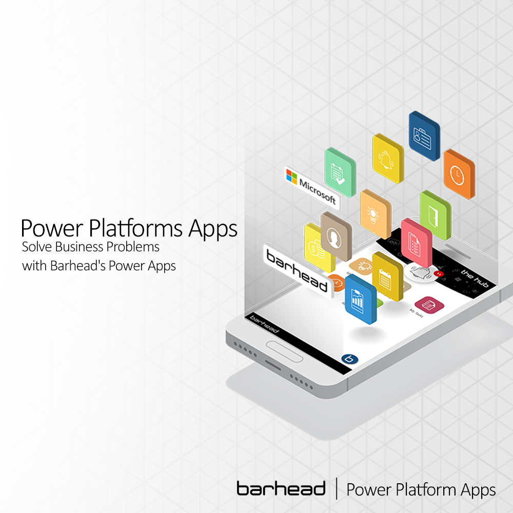

What is application platform?

Applcation Platform
CSPT
An application platform is a software framework that provides tools, services, and components to developers in order for them to build and distribute apps. Instead of worrying about underlying infrastructure and architecture, application platforms allow developers to concentrate on designing application functionality. This article will go through several platform technologies used in application development.
Different application platforms
- Web Application Platforms:
- Mobile Application Platforms:
- Cloud Application Platforms:
Web application platforms are software frameworks used to build and deploy web applications. These platforms provide developers with the tools to build web applications that run on web servers. Some popular web application platforms are:
Ruby on Rails: Ruby on Rails is a web application framework written in Ruby that follows the Model-View-Controller (MVC) architecture. It is known for its simplicity, convention over configuration, and rapid development.
Django: Django is a web application framework written in Python that follows the Model-View-Template (MVT) architecture. It is known for its scalability, security, and robustness.
ASP.NET: ASP.NET is a web application framework developed by Microsoft that supports multiple programming languages, including C# and VB.NET. It is known for its performance, security, and scalability.
Mobile application platforms are software frameworks used to build and deploy mobile applications. These platforms provide developers with the tools to build mobile applications that run on mobile devices. Some popular mobile application platforms are:
iOS: iOS is a mobile operating system developed by Apple. It is known for its simplicity, security, and user experience. iOS applications are built using Xcode, which is an Integrated Development Environment (IDE) for macOS.
Android: Android is a mobile operating system developed by Google. It is known for its customization, openness, and large user base. Android applications are built using Android Studio, which is an IDE for Windows, macOS, and Linux.
React Native: React Native is a mobile application framework developed by Facebook. It enables developers to build mobile applications for both iOS and Android platforms using a single codebase. It is known for its performance, flexibility, and scalability.
Cloud application platforms are software frameworks used to build and deploy cloud applications. These platforms provide developers with the tools to build cloud applications that run on cloud servers. Some popular cloud application platforms are:
Amazon Web Services (AWS): AWS is a cloud platform developed by Amazon that provides a wide range of services for building and deploying cloud applications. It is known for its scalability, reliability, and security.
Microsoft Azure: Microsoft Azure is a cloud platform developed by Microsoft that provides a wide range of services for building and deploying cloud applications. It is known for its integration with Microsoft products, scalability, and reliability.
Google Cloud Platform (GCP): GCP is a cloud platform developed by Google that provides a wide range of services for building and deploying cloud applications. It is known for its performance, scalability, and innovation.

Amazing.
— Chris Stanworth